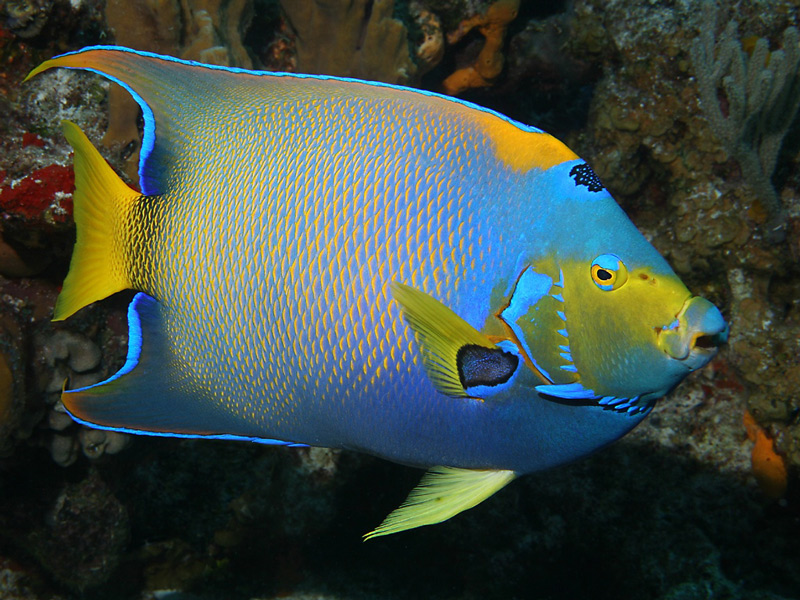

Рыба-ангел

Рыбы-ангелы — семейство тропических морских рыб из отряда Окунеобразных. Не стоит путать рыб-ангелов с морскими ангелами — особым родом акул, с которым они не состоят в родстве. Систематически к рыбам-ангелам наиболее близки рыбы-бабочки, с которыми у них много внешнего сходства. Раньше их даже объединяли в одно семейство. В настоящее время известно 85 видов рыб-ангелов.
Тело этих рыб уплощено с боков, крупная голова и хвост укорочены, отчего туловище кажется прямоугольным. На наружной стороне жаберных крышек есть острый шип, направленный назад. Грудные плавники заостренные, брюшные сдвинуты вперед и располагаются под грудными, спинной и анальный плавники широкие. Окраска этих рыб очень яркая, сочетающая в себе полосатый или сетчатый рисунок голубого, синего, желтого, оранжевого и черного цвета. Для рыб-ангелов характерны большие различия в окраске молодых и взрослых рыб, они настолько велики, что поначалу молодь и взрослых рыб описывали как разные виды.